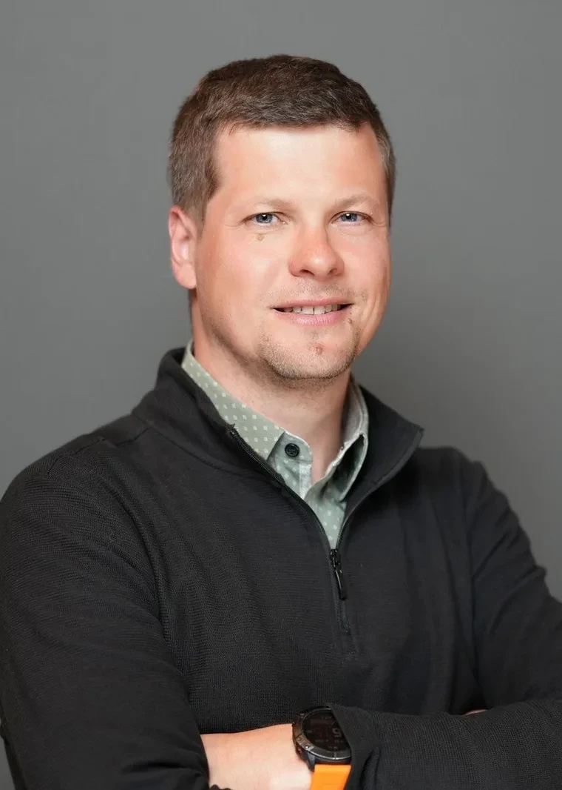

Yurii Rashkovskiifounder of Inferal · technologist
Technology is most fascinating when you get it to do new things, unlocking all this raw potential, instead of fixing up something that has stopped working long ago.
Thirty-odd years of building companies and software, with a stubborn interest in reducing complexity. Ukrainian-born; home is two places, Redwood City and Comox, shared with his wife and children. Runs, skis, cycles, and is trying to figure out sailing.
Software is eating your business.
Your systems know what happened. Inferal determines what happens next — data infrastructure that replaces custom glue software with live, governed decision logic. inferal.com ·
Founder
Built a few companies since 2007; now . Learned a lot – some things change and some never do.
Writer
Essays on how people and systems actually work — Team Uncommunication, one commit at a time.
Branding
Naming is one of the hardest and most fascinating pastimes. I am proud of some names I found – even though my taste has changed over time.
Builder
Relentlessly experimenting at work. Recent open source: , an ISA where memory is explicit I/O; , a C++26 standard library; for Ada.
It’s my way of converting a calling into a lifelong job – I want to see a change come through digested glass.— on why startups
<https://yrashk.com/atlas/…>. Results locate and highlight on the chart.StrataOS has a tiled window server and a strip of core cells that pulse on context switches. You are looking at its cousin.